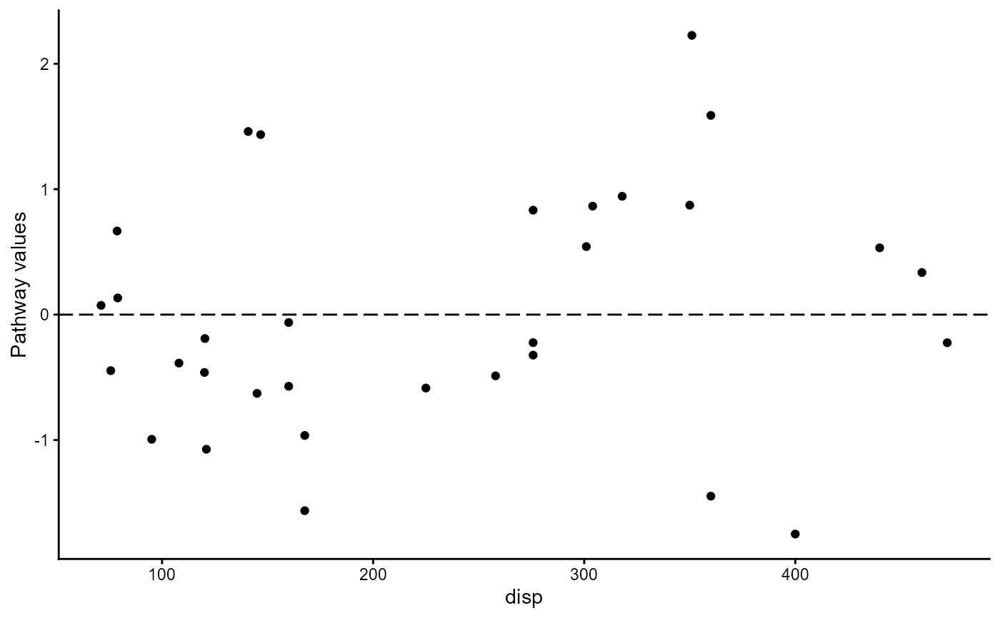

Plot of residuals against pathway variable
Value
A plot of the chosen type of pathway values against the pathway variable created with ggplot2.
Examples
df_full <- lm(mpg ~ disp + wt, data = mtcars)
df_reduced <- lm(mpg ~ wt, data = mtcars)
pathway_xvr(df_full, df_reduced, pathway_type = "pathway_wb")
#> Warning: `aes_string()` was deprecated in ggplot2 3.0.0.
#> ℹ Please use tidy evaluation idioms with `aes()`.
#> ℹ See also `vignette("ggplot2-in-packages")` for more information.
#> ℹ The deprecated feature was likely used in the MMRcaseselection package.
#> Please report the issue at
#> <https://github.com/ingorohlfing/MMRcaseselection/issues>.
